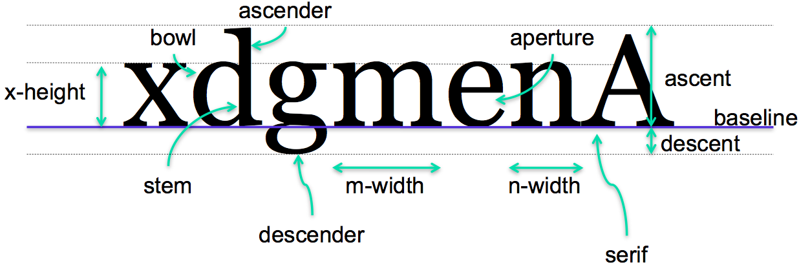
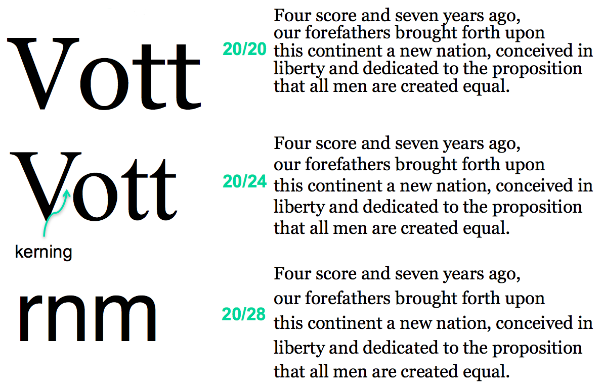
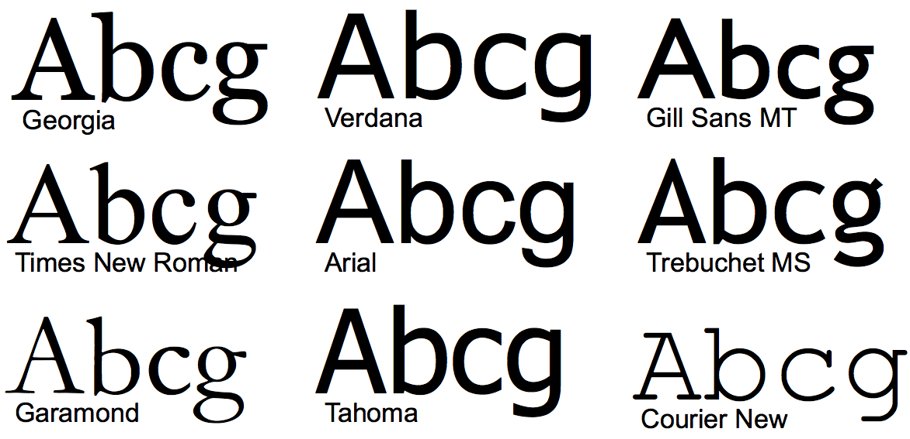

**Typography** is the art and science of displaying text (or "setting type" as print designers call it). The key decisions of typography concern font (the shapes of letters and other characters) and spacing (the white space around letters, words, lines, and paragraphs). Both are important to successful text display; without adequate spacing, the shape of the text is much harder for the eye to discriminate.
For typography, an outstanding book is Robert Bringhurst, [The Elements of Typographic Style](http://www.amazon.com/Elements-Typographic-Style-Robert-Bringhurst/dp/0881791326), Hartley & Marks, 2002. Also useful is "[Principles of Typography for User Interface Design](http://dl.acm.org/citation.cfm?id=287825)" by Paul Kahn and Krzysztof Lenk, *interactions*.
Readability
Readability
- Reading process consists of fixations and saccades
- Readability vs. legibility
- Metrics of readability
- Speed
- Comprehension
- Subjective preference
Note that most high-level comments are applicable to most written languages, not just English or Korean. However, most of the reading on fonts will be specific to languages that use the Latin alphabet and its corresponding fonts. Please leave comments on whether or how the points made in this reading might apply to Korean or other languages you're familiar with.
First, reading is not a smoothly linear process, even though it may feel that way to introspection. The eye does not move steadily along a line of text; it proceeds in fits and starts, called **fixations** (stopping and focusing on one place to recognize a word or several words at a time) and **saccades** (an abrupt jump to the next fixation point). At the end of a line, the eye must saccade back to the beginning of the next line.
Researchers studying reading and typography often make a distinction between *legibility*, which is low-level and concerns how easy it is to recognize and distinguish individual letter shapes, and *readability*, which concerns the effectiveness of the whole reading process. A single fixation can consume whole words or multiple words, so fluent readers recognize the shape of an entire word, not necessarily its individual letters. Readability can be measured by several metrics, including speed, comprehension, error rate, and subjective preference. Readability is essentially the usability of a display of text. A good discussion of the reading process can be found [here](http://www.microsoft.com/typography/ctfonts/wordrecognition.aspx).
Fonts
Dimensions of a Font

Now a few definitions. Characters in the Latin alphabet all sit on a common baseline. Some characters have descenders dipping below the baseline; others have ascenders rising above the typical height of a lowercase character (the x-height). Capital letters also ascend above the **x-height**. The typical height of ascenders above the baseline is called the **ascent**, and the typical height of descenders below it is called the **descent** of the font.
The **font size** is typically ascent + descent (but not always, alas, so two fonts with the same numerical size but using different typefaces may not line up in height!). Font size is denoted in points; a point is 1/72 inch, so a 12-point font occupies 1/6 of an inch vertically.
X-height, m-width, and n-width are useful font-dependent length metrics. You can find them used in CSS, for example. They allow specifying lengths in a way that will automatically adapt when the font is changed.
More font terminology can be found [here](http://www.davidairey.com/images/design/letterform.gif).
Measurements in CSS
- Device-dependent
- Resolution-dependent
- in, cm, mm
- pt = 1/72 in
- pc ("pica") = 12pt = 1/6 in
- Font-dependent
- em = font size
- ex = x-height
Whitespace
Spacing

Several kinds of spacing matter in typography. At the lowest level is character spacing. The gaps between characters must be managed to prevent uneven gaps or characters appearing to run into each other. **Kerning** is the process of adjusting character spacing for *particular pairs* of characters; sometimes it needs to be narrowed (as V and o shown here), and sometimes widened (e.g., to keep "rn" from looking too much like "m"). Note that *kerning* is now widely misused to refer to **letter-spacing**, or **tracking**, which refers to the overall density of a set of words; use "kerning" to refer to the spacing between two individual letters. A good font has kerning rules built into it, and a good GUI toolkit uses them automatically, so this is rarely something GUI programmers need to worry about, except when choosing a font.
Spacing between words and lines matters too. Words must have adequate space around them to allow the word shape to be easily recognized, but too much space interferes with the regular rhythm of reading. Similarly, adequate line spacing is necessary to make word shapes recognizable in a vertical dimension, but too much line spacing makes it harder for the eye to track back to the start of the next line. Line spacing is also called **leading** (pronounced like "ledding"); technically speaking, the leading is the distance between baselines of adjacent lines. Both font size and leading are important. Using the same line height as font size is almost always a mistake; characters from adjacent lines touch each other, and the paragraph is much too crowded.
In most toolkits, choosing a font size implicitly chooses a leading, but the default leading may not always be the best choice. Look at it and adjust if necessary. CSS makes this possible using the `line-height` property.
Spacing Guidelines
- Use whitespace
- Always leave margins around body text; never pack it tightly against an edge
- Use generous leading
- Make sure body text is not overcrowded
- e.g., CSS:
line-height: 140%;
- Keep text paragraphs narrow
- About 60-75 characters / 12-15 words / 30-45 em
Here is some advice for choosing spacing for body text (text set in paragraphs). Always leave margins around body text; never pack it tightly against a rule, an edge, or a window boundary. The margin helps frame the text and also helps the reader find the ends of the lines, which is essential for the saccade back to the beginning of the next line.
Use generous leading, but not too generous. The traditional rule of thumb for print typesetting is 120% of the font size. Modern websites often use 140% to 160%. The [W3C accessibility guidelines](https://www.w3.org/TR/UNDERSTANDING-WCAG20/visual-audio-contrast-visual-presentation.html) recommend at least 150% to make it easier to track back to the start of the next line. This reading is at the high end, with 180%.
Line length (or equivalently, paragraph width) is another important consideration. Hundreds of years of experience from print typography suggest that fairly short lines (3-4 inches) are both faster to read and preferred by users. Unfortunately the studies of onscreen reading yield mixed answers; apparently, on screen, longer lines (about twice the ideal length for print) help users read faster, but users still prefer the short lines (perhaps because their consistent feel with print). These same studies show that onscreen reading is slower than print reading, however, and recent studies have shown less and less effect of line length on speed, possibly because display and font technology is improving rapidly. So it's possible that making the lines longer merely offsets the poorer resolution and legibility of computer displays relative to print, and as the displays approach print in quality, this distinction will go away. (Bailey, "Optimal Line Length: Research Supporting How Line Length Affects Usability ", December 2002)
Translating the 3-4 inch rule into characters or m-widths for typical 10-point to 12-point type gives 60-75 characters or 30-45 em widths.
Typeface
Typeface

After spacing, a key decision is what **typeface** to use. Typeface refers to a family of fonts sharing the same name, like "Arial" or "Georgia." A **font** is a choice of typeface and size and style, like roman, italic, oblique, boldface, etc.
Typefaces can be classified in many ways, and can convey strong associations that influence how the user perceives the text. One important classification you should know is between **serif** fonts, like Georgia and Times, and **sans serif** fonts, like Verdana and Arial. Historically, in print typography, serif fonts have been used for **body text** (text set in paragraphs), because they offer stronger cues to word shape that allow measurably faster reading. Sans serif fonts were generally used for **display text** (text that stands alone, like headings and labels), for which reading speed is less important and contrast from body text is useful.
In the early days of computer typography, sans serif fonts were often preferred for all uses, because their simpler letter shapes were far more legible on low-resolution displays. As displays become higher resolution, however, serif text may once again assert itself; even now, there is evidence that serif fonts are faster to read on screen (Bernard et al, "A Comparison of Popular Online Fonts: Which is Best and When? ", Usability News, 2001).
Another key distinction is between proportional fonts (in which each character has a different width) and monospace fonts (in which all characters have the same width, like Courier New shown here). Monospace fonts waste screen space and generally look worse than well-designed proportional fonts, so avoid them unless you have a good reason.
Character Sets and Encodings
- Character sets
- ASCII: A-Z, a-z, 0-9, punctuation, control characters
- Latin-1: ASCII + accented Latin alphabet
- Unicode: Latin-1 + Greek, Cyrilic, CJK, math symbols, ...
- Fonts map characters to visual appearance
- Encodings map characters to numbers
- ASCII: A-Z map to 65-90
- Latin-1: À maps to 192
- UCS-2: each character maps to 2 bytes
- UTF-8: each character maps to 1-3 bytes
Note the difference between **character sets** and **fonts**. The Unicode character 'A' doesn't actually say how to *draw* A on the screen; a font does that. So even though you can represent many different alphabets in a single Unicode string, the *font* you're drawing the string with doesn't necessarily know how to draw all those characters. The appearance of a particular character in a font is called a glyph. Many fonts only have glyphs for a small subset of Unicode. For characters that aren't supported by the font, you'll see an error glyph, which might look like a little empty square or a question mark.
Note also the difference between character sets and **encodings**. A character set is an abstract set of possible characters. ASCII had 128 characters; Latin-1 had 256 characters, and Unicode has thousands of characters. An encoding maps each character in a character set to a number (or a small sequence of numbers). Internally, Java uses a 16-bit encoding for Unicode characters, representing each character by two bytes in memory. But the most common encoding for Unicode text in files and web pages is UTF-8, which does not use two bytes per character. Instead, UTF-8 uses 1, 2, or 3 bytes to represent each character. Single bytes are used to represent all the 7-bit ASCII characters, so UTF-8 can be thought of as an extension to ASCII.
There are other encodings as well. ASCII maps its characters to the numbers 0-127, which are stored in bytes. Latin-1 (also called ISO 8859-1 after its ISO standard) maps its characters to 0-255 (compatibly).
In general, **you cannot correctly interpret a text file or web page without knowing its encoding**. If your code ignores encodings and assumes everything is ASCII, you will find that it mostly works as long as you only use English, because encodings generally strive for backwards compatibility with ASCII. In other words, an English text would probably look identical in ASCII, UTF-8, and Latin-1. But it may break horribly on text in other languages. Even English text has problems when the author uses punctuation that isn't available in the basic ASCII character set. For example, ASCII only had one kind of double-quote mark (a vertical one), but many word processors now use left and right double quotes that are available in Unicode and other character sets, which often turn into garbage characters when you load the text into encoding-ignorant programs.
For more about encodings, Joel Spolsky has [a good article](http://www.joelonsoftware.com/articles/Unicode.html).
Choosing Fonts
Font Selection
- Simplicity & contrast
- Don't use more than 2 or 3 typefaces
- e.g., one for body text, one for display text
- Don't use two faces from the same font category
- e.g., only one sans serif
- Use size, weight, style (e.g., italic/small caps), hue to establish essential contrasts
- But 4-5 font varieties should be enough
In general, decisions about typography are like other decisions in graphic design: use font selection to make important contrasts, and otherwise keep your font choices simple. Don't use more than 2 or 3 typefaces (if that many). You might use a serif face for body text, and a sans serif face for display text. Many interfaces have no real need for body text at all, in which case you can easily get away with a single typeface.
Within the typefaces you chose, use variation of size and style (and color) to establish the necessary contrasts. Size, in particular, makes it easy to establish a hierarchy, such as headings and subheadings. Even so, 4-5 fonts in all should be all you need.
Tools
- Use browser developer tools to examine CSS style
- Indentifont (20 questions about fonts)
- WhatTheFont (image lookup)
Answer this question: [Typography](https://docs.google.com/forms/d/e/1FAIpQLSdZKONNWyAnLKLhCqoUqiWarL-vmlafXUx_D4vYUXfGNHd3Og/viewform?usp=sf_link)